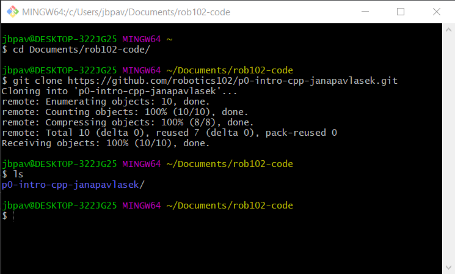

Before you start, make sure you have followed the Setup Instructions. You will need to have VSCode, Docker and Git installed (if using Windows, you will also need Git Bash) in order to complete this tutorial.
Getting the code
We will use Github to manage our code. A Github tutorial is available here.
The code you write for each project will be stored in a repository on your own Github account. If you do not have a Github account, go to github.com and create one. To create repositories for your code, we will use Github Templates. Navigate to the template code for Project 0. Click on the green Use this template button:

You will see a screen like the one below. Pick a name for your repository, and make sure it is set to private. Storing your assignment solutions in a public repository is a violation of the honor code. You can leave the option to include all branches unchecked.

Next, you will give the instructors access to your code. In your new repository, go to "Settings" > "Manage Access" and click "Invite a collaborator". Add Prof. Jenkins and Jana using their usernames, ohseejay and janapavlasek.

Finally, we're ready to clone the repository! Open a terminal (on Mac, click the Launchpad, search for "Terminal" and select the terminal program. On Windows, open Git Bash). Use the cd command to navigate to the folder where you would like to keep your code. Clone your repo using:
git clone <ADDRESS>Substitute the address to your repo, which you can copy using the clipboard button.
Once you have the code on your computer, open VSCode and select "File" > "Open Folder..." and navigate to where you stored your code. Select the folder and click "Select Folder". Now you should see all the files in VSCode in the file explorer on the left. You can click on any file to view and edit it.
Running a Docker container
For this assignment (as well as Project 2 and Project 3), you will be compiling and executing your code in a Docker container. A Docker container provides a virtual environment with all the necessary dependencies which is consistent across any computer. In ROB 102, we will be using Docker containers to make it easy to run the code you will develop without installing lots of dependencies. This also allows us to be sure that everyone is running code in the exact same environment.
We have provided a script to start a Docker container. We will be using the gcc Docker image which is based on Linux and includes everything we need to compile C++ code. Open a terminal in VSCode by selecting "Terminal" > "New Terminal". It should open a Bash terminal at the bottom of the screen, in the folder where your code is stored. In the terminal, type:
./docker_runThe container will start and the terminal will now be in open in the container.
Project Description
TODO
Part 0: Hello World!
TODO
Part 1: Variables & Operators
TODO
Part 2: Logic & Control Flow
TODO
Part 3: Functions
TODO
Part 4: Vectors & Structs
TODO